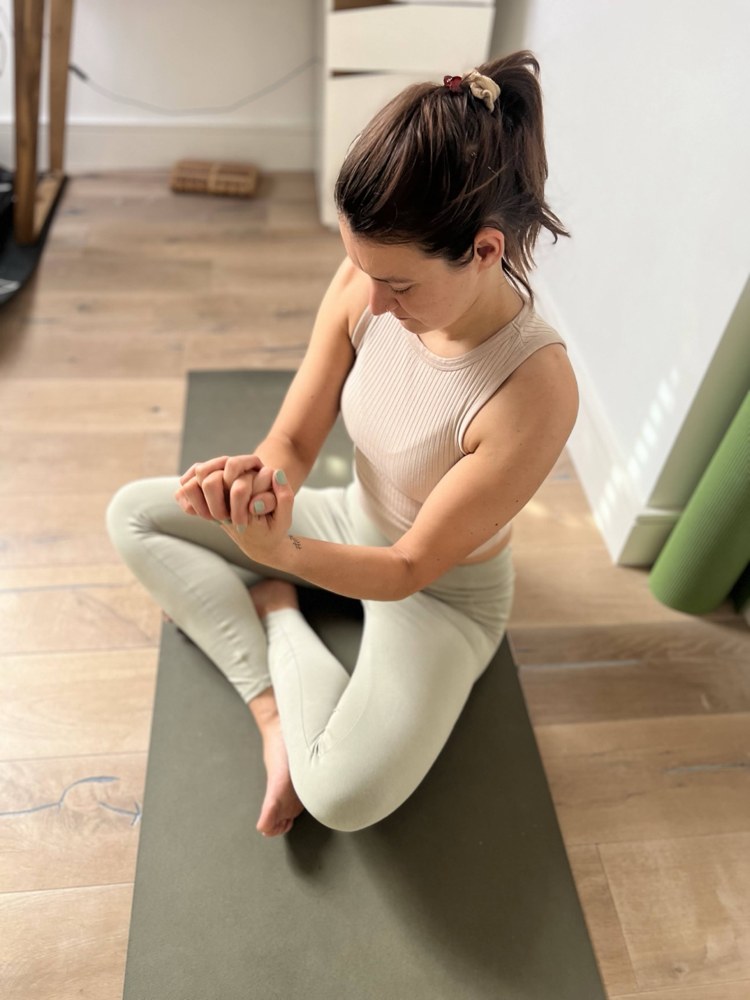

Words from the women
in this space.

I never experienced something like this. I actually never credited the power of feelings or somatic work — things become clear with Clara. It opened a portal to feelings in a very subtle way, which I didn't know was there.— Myke P., somatic coaching client

I would highly recommend Clara and somatic coaching as an easy way to stay grounded and build self trust when feeling emotions.— Fontanna W.

This video was recommended to me and I was surprised it had so few views. I clicked and I'm so glad I did — I'm going through a hard time and this really helped me.— YouTube viewer